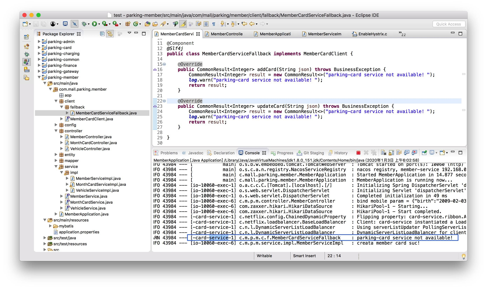
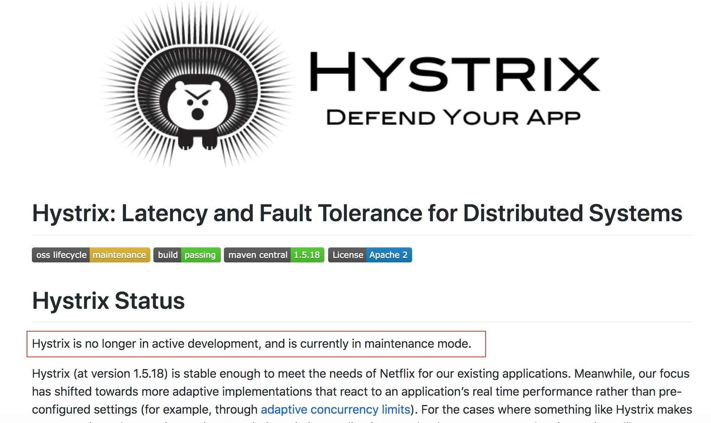
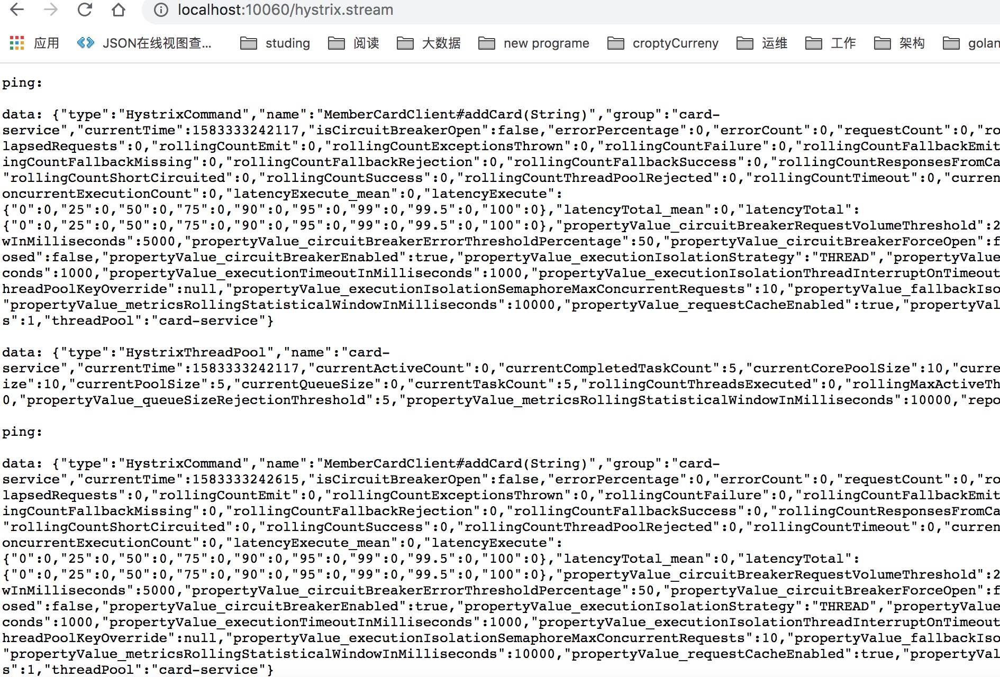
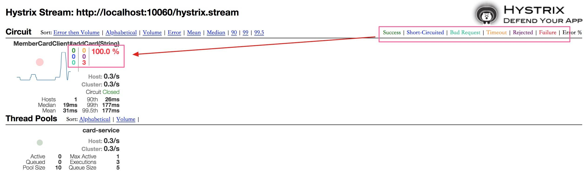

- 00 开篇导读.md.html
- 01 以真实“商场停车”业务切入——需求分析.md.html
- 02 具象业务需求再抽象分解——系统设计.md.html
- 03 第一个 Spring Boot 子服务——会员服务.md.html
- 04 如何维护接口文档供外部调用——在线接口文档管理.md.html
- 05 认识 Spring Cloud 与 Spring Cloud Alibaba 项目.md.html
- 06 服务多不易管理如何破——服务注册与发现.md.html
- 07 如何调用本业务模块外的服务——服务调用.md.html
- 08 服务响应慢或服务不可用怎么办——快速失败与服务降级.md.html
- 09 热更新一样更新服务的参数配置——分布式配置中心.md.html
- 10 如何高效读取计费规则等热数据——分布式缓存.md.html
- 11 多实例下的定时任务如何避免重复执行——分布式定时任务.md.html
- 12 同一套服务如何应对不同终端的需求——服务适配.md.html
- 13 采用消息驱动方式处理扣费通知——集成消息中间件.md.html
- 14 Spring Cloud 与 Dubbo 冲突吗——强强联合.md.html
- 15 破解服务中共性问题的繁琐处理方式——接入 API 网关.md.html
- 16 服务压力大系统响应慢如何破——网关流量控制.md.html
- 17 集成网关后怎么做安全验证——统一鉴权.md.html
- 18 多模块下的接口 API 如何统一管理——聚合 API.md.html
- 19 数据分库后如何确保数据完整性——分布式事务.md.html
- 20 优惠券如何避免超兑——引入分布式锁.md.html
- 21 如何查看各服务的健康状况——系统应用监控.md.html
- 22 如何确定一次完整的请求过程——服务链路跟踪.md.html
- 23 结束语.md.html
08 服务响应慢或服务不可用怎么办——快速失败与服务降级
上个章节已经基于 OpenFeign 完成了微服务间的调用，并且在多实例集群的情况下，通过调整负载策略很好应对并发调用。网络产品开发时，网络有时可能是不可用的，服务亦有可能是不可用的，当调用服务响应慢或不可用时，大量的请求积压，会成为压倒系统骆驼的最后一根稻草。这种情况下，我们如何应对呢？本章节就带你走近 Hystrix 组件。
什么是 Hystrix
它是分布式系统提供的一个低时延容错机制的基础组件，提供限流、服务降级、系统熔断保护、快速失败等多个维度来保障微服务的稳定性。Hystrix 也是 Netflix 套件的一部分。
遗憾的是 1.5.18 版本之后进入了维护模式，官方提供了替代方案：resilience4j，本测试采用的 Hystrix 终极版，需要更高版本的话，建议还是采用 resilience4j ，这里不作过多介绍，后续将替换成另一个重要组件——Sentinel 来替代 Hystrix。
引入 Hystrix
采用 starter 的方式引入
<dependency>
<groupId>org.springframework.cloud</groupId>
<artifactId>spring-cloud-starter-netflix-hystrix</artifactId>
</dependency>
feignClient 中已经默认集成了断路器的功能，但是需要在配置文件中打开，才能开启。在 application.properties 中打开 hystrix 开关：
#hystrix enable
feign.hystrix.enabled=true
重新回到之前的 FeignClient 代码，在注解中增加 fallback 属性值，添加相应的 fallback 调用类。
@FeignClient(value = "card-service", fallback = MemberCardServiceFallback.class)
public interface MemberCardClient {
@RequestMapping(value = "/card/addCard", method = RequestMethod.POST)
public CommonResult<Integer> addCard(@RequestParam(value = "json") String json) throws BusinessException;
@RequestMapping(value = "/card/updateCard", method = RequestMethod.POST)
public CommonResult<Integer> updateCard(@RequestParam(value = "json") String json) throws BusinessException;
}
编写 MemberCardServiceFallback 方法，就是一个普通的服务实现类，增加了@Component 注解。
@Component
@Slf4j
public class MemberCardServiceFallback implements MemberCardClient {
@Override
public CommonResult<Integer> addCard(String json) throws BusinessException {
CommonResult<Integer> result = new CommonResult<>("parking-card service not available! ");
log.warn("parking-card service not available! ");
return result;
}
@Override
public CommonResult<Integer> updateCard(String json) throws BusinessException {
CommonResult<Integer> result = new CommonResult<>("parking-card service not available! ");
log.warn("parking-card service not available! ");
return result;
}
}
测试 Hystrix
上一章节中按正常流程已经将功能完成：会员开通后，积分生成，这里将不启动"积分子服务"，看看会是什么效果。(默认服务注册中心已经启动，这里及后续演示过程中不再专门提出)
- 只启动 parking-member 一个子服务
- 打开 parking-member 子服务的 swagger-ui 界面，调用会员绑定手机号接口(或采用 PostMan 工具)
正常情况下会直接调用 fallback 接口，快速失败，响应调用方。
此时将积分模块服务启动，再次发起调用，正确情况下已不再调用 fallback 方法，而是正常调用积分服务接口，如下图所示：


图形化监控 Hystrix
通过上面的应用，我们已经可以将 Hystrix 正常的集成到功能开发过程中，但究竟 Hystrix 实时运行状态是什么样的呢？有没有什么办法可以看到 Hystrix 的各项指标呢？这里我们引入 Hystrix Dashboard (仪表盘)，通过 UI 的方式，快速的查看运行状况。
新增仪盘表项目
我们在 parking-base-serv 项目下，新建一个名为 parking-hystrix-dashboard Spring Boot 子工程，专门来做 Hystrix 的仪表盘监控。修改 pom.xml 文件，添加相关依赖：
<dependency>
<groupId>org.springframework.cloud</groupId>
<artifactId>spring-cloud-starter-hystrix-dashboard</artifactId>
</dependency>
<dependency>
<groupId>org.springframework.boot</groupId>
<artifactId>spring-boot-starter-actuator</artifactId>
</dependency>
在项目启动类中增加 @EnableHystrixDashboard 注解，开启仪表盘功能
@SpringBootApplication
@EnableDiscoveryClient
@EnableHystrixDashboard
public class ParkingHystrixDashboardApplication {
public static void main(String[] args) {
SpringApplication.run(ParkingHystrixDashboardApplication.class, args);
}
}
启动项目，打开地址：http://localhost:10093/hystrix，出现如下界面表明正常运行。
调整被监控项目
会员服务中在调用积分服务接口的过程中，采用 Feign 的方式发起远程调用，同时实现了 fallback 服务降级、快速失败功能，本次要监控的主要目标就是此功能。
在 parking-member 项目 config 代码包下，增加 Hystrix 数据流的配置：
@Configuration
public class HystrixConfig {
@Bean
public ServletRegistrationBean<HystrixMetricsStreamServlet> getServlet() {
HystrixMetricsStreamServlet servlet = new HystrixMetricsStreamServlet();
ServletRegistrationBean<HystrixMetricsStreamServlet> bean = new ServletRegistrationBean<>(servlet);
bean.addUrlMappings("/hystrix.stream");
bean.setName("HystrixMetricsStreamServlet");
return bean;
}
}
启动后，打开本项目的 Hystrix 数据获取地址：http://localhost:10060/hystrix.stream，初始状态，页面会不停的输出 ping 空值的情况，只有采用 Hystrix 当相关功能被请求时，才能正常的输出数据 JSON 格式数据，如截图所示：

上图输出的结果不够友好，没有办法直观的分析 Hystrix 组件的应用情况，此时我们的仪表盘项目就派上用场。
仪表盘解读
将地址 http://localhost:10060/hystrix.stream 输入到 dashboard 页面中数据抓取地址栏中，Delay 项可采用默认值，Titile 项可以新取一个名字，便于我们能够识别。同样的，相关功能只有被执行过，仪表盘中才能正常的显示，下图所示是由于积分服务未启动，会员服务直接调用导致全部失败的情况。

关于图表简单解读下：
- 左上角的圆圈表示服务的健康程度，从绿色、黄色、橙色、红色递减
- 曲线用来记录 2 分钟内流量的相对变化，观察流量的上升和下降趋势。
- 左侧框中的数字与右上数字含义是一一对应
- Host 与 Cluster 记录的是服务请求频率
- 再下面的几个 *th 标签表示百分位的延迟情况
(恢复积分服务后，高频次重新调用功能，发现请求是正常的，圆圈也变大)
本案例中仅编写了一个 Hystrix 的应用情况，如果服务中多处使用的话，仪表盘的展现会更加丰富，从页面上可以清晰监控到服务的压力情况、运转情况等等，为运维工作提供重要的参照依据。
(图中参数展现略有不同，图片来源于https://github.com/Netflix-Skunkworks/hystrix-dashboard)
通过上文的学习实践，相信你对 Hystrix 断路器的应用有了初步的概念，以及如何应用到项目中去，为我们的服务提供保驾护航。
留一个思考题
文中仅展示了一个模块服务的断路器的应用，如果是多个服务需要监控怎么办？同时打开多个仪表盘页面吗？你有没有什么更好的办法？